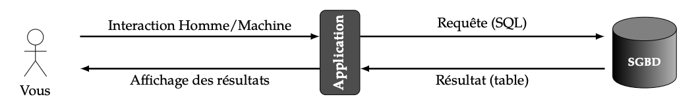
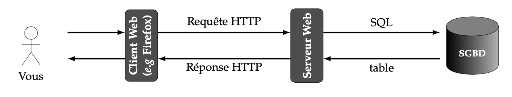
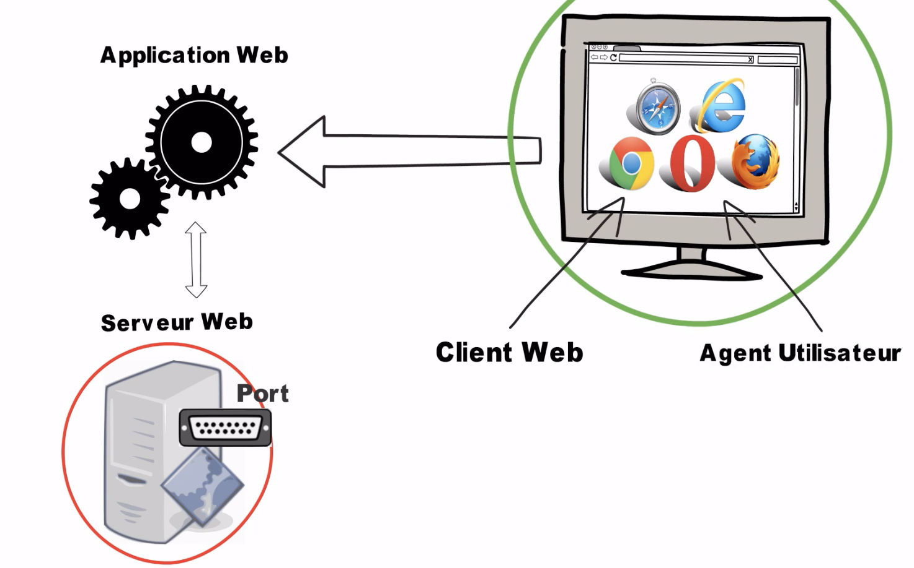
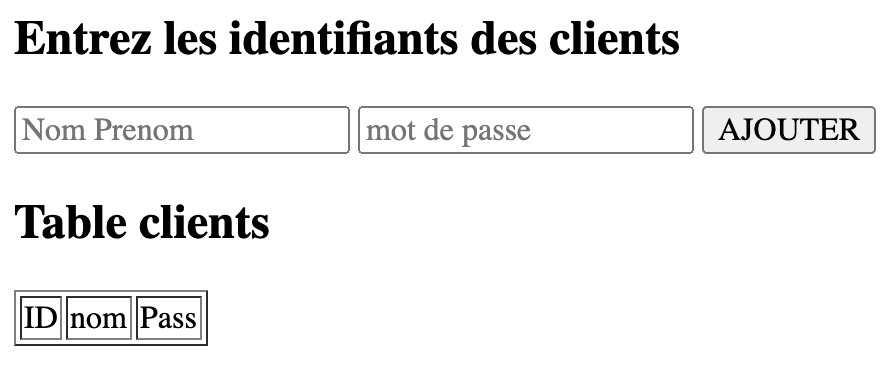
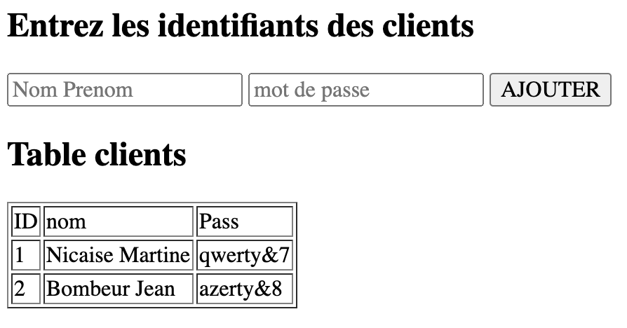
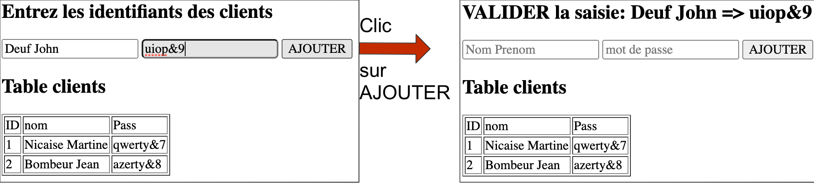
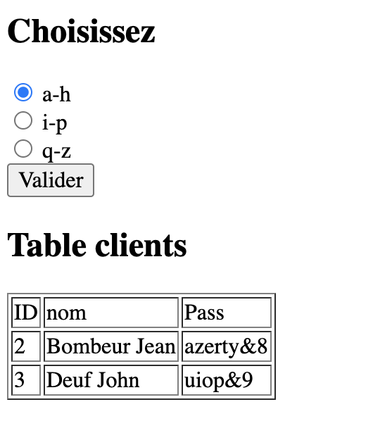
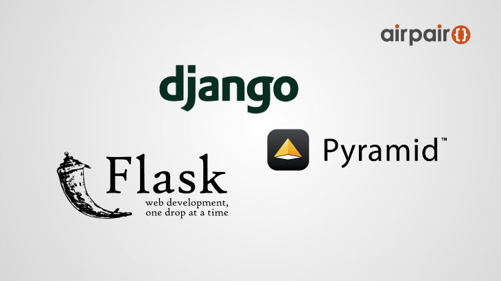

SQL - python
Serveur SQL
Necessité d’une interface
Nous avons utilisé le programme SQLite, ou SQLiteBrowser pour faire interface entre l’utilisateur et la base de données, sur le modèle suivant:

SQLite comme interface
À titre d’exemple, considérons une application fictive de recherche d’horaires de train.

tableau des horaires de trains © REUTERS.
Voici un scénario possible de fonctionnement de cette application :
- L’application demande à l’utilisateur : « Quelle est la ville de départ ? ».
- L’utilisateur répond « Caussade ».
- L’application demande à l’utilisateur : « Quelle est la ville d’arrivée ? ».
- L’utilisateur répond « Brive-la-Gaillarde ».
- L’application envoie au SGBD la requête SQL :
- Le SGBD répond au programme en envoyant l’ensemble de tuples {(15h47, 17h22); (18h21, 19h58)}
- Le programme affiche à l’utilisateur : Résultats pour le trajet Caussade -> Brive-la-Gaillarde
Ce scenario semble plausible. En réalité, nous verrons qu’il y a une couche intermédiaire de plus: l’application web, côté serveur.
Architecture Client-Serveur Web
Le serveur et ses clients sont des applications distinctes qui s’échangent des informations. Lorsque la connexion est établie, l’application cliente peut interroger le serveur en lui envoyant une requête (une instruction).
Il s’agit par exemple de demander une page web. Mais il peut aussi s’agir d’un besoin de services mettant en jeu la lecture, suppression ou modification d’une information dans une base de données.
Le serveur exécute alors la requête en recherchant les données correspondantes dans la base, puis il expédie en retour une certaine réponse au client. Il compose la page web avant de la distribuer au client s’il s’agissait d’un protocole http.
La communication entre le client et le serveur est donc faite de requêtes et de réponses.

client - serveur
Une application web est un programme stocké sur un serveur distant auquel on accede via une connexion au reseau, via http. Celui-ci peut faire interface avec une base de données, fabrique les pages web à la volée pour le client. Ce client a besoin d’un navigateur pour se connecter à cette application web. L’application web utilise comme langage de programmation un langage dédié, comme Python, PHP, node, C, ou autre. Alors que la ressource côté client est, elle, programmée en HTML, Javascript, et CSS.

Qu'est ce qu'une application web - video de la chaine WayToLearnX
Un exemple de page statique
Le fichier suivant, formulaire.txt génère un formulaire. Lorsque l’on appuie sur le bouton, les valeurs des champs nom et pass sont transmises par methode POST.

exemple de page statique
Vous pouvez ouvrir ce fichier en le télechargeant dans vos documents, puis:
- changer l’extension .txt => .html
- ouvrir avec votre navigateur web
Serveur Python
Librairie http.server
Il est possible d’écrire en Python une application web. Le plus simple est d’utiliser les librairies http.server et cgi, directement intégrées au langage.
Une fois le script server.py lancé, le client pourra se connecter au serveur local à l’adresse http://localhost:8800.
Pour lancer votre serveur local, télécharger, et mettre dans vos documents le fichier server.py, puis executer à partir d’un IDE comme Spyder par exemple.
Librairie cgi
L’utilisation d’un formulaire ou la création de pages web dynamique nécessite d’importer la librairie cgi.
Les instructions de création de la page web seront mises dans un fichier d’extension .py.
Pour que le serveur compile et exécute le code source de votre fichier.py, il faudra naviguer vers ce fichier grâce à l’URL http://localhost:8800/fichier.py.
Dans ce fichier, CGI permet de générer des pages web sur le champ, en fonction des actions du client. (Par exemple le chargement du formulaire lors de l’appui sur le bouton).
Il suffira d’utiliser la fonction print pour afficher les éléments HTML dans la page du client.
A vous de tester: Dans un fichier que vous nommerez
store.py:
- Mettre les lignes suivantes dans le fichier:
- Ajouter les instructions en HTML entre les guillemets affectés à html1, html2 et html3 (partager le script html en 3 parties).
- Demander l’execution du script à l’aide du navigateur. Le formulaire affiché doit être identique à celui de la page formulaire.html précédent.
Python + SQL
Contenant son propre SGBDR intégré, Python dispose de manière native de la librairie sqlite3 au moment de l’écriture de ce TP. Il faudra importer ce module avec par exemple:
Puis créer un objet-connexion vers la base de données clients.db, à l’aide de la fonction-fabrique connect():
Cet objet assurera l’interface entre votre programme et la base de données.
Pour dialoguer en SQL avec cet objet con, on utilisera encore un autre objet-interface que l’on appelle un curseur. Il s’agit d’une sorte de tampon mémoire intermédiaire, destiné à mémoriser temporairement les données en cours de traitement, ainsi que les opérations que vous effectuez sur elles, avant leur transfert définitif dans la base de données. Cette technique permet d’annuler et de revenir en arrière dans le traitement, sans que la base de données n’en soit affectée.
La requête est exprimée dans une chaîne de caractères, que nous transmettons au curseur par l’intermédiaire de sa méthode execute():
Tant que le curseur reste ouvert, vous pouvez bien entendu ajouter des enregistrements supplémentaires :
Il sera souvent necessaire d’utiliser les contenus de variables python. Il est cependant fortement déconseillé de faire appel aux techniques ordinaires de formatage des chaînes, car cela peut ouvrir une faille de sécurité dans vos programmes, en y autorisant les intrusions par la méthode de piratage connue sous le nom de SQL injection. D’où la séquence d’instruction: VALUES(1,?,?)",(nom,mdp)).
Pour récuperer le contenu d’une table de la base de données: La méthode Fetchall (est )une alternative à Fetchone), permet de récupérer d’un coup l’ensemble du résultat d’une requête:
La variable rows est alors une liste de listes. (les n-uplets de la table)
Le transfert dans la base de données sera déclenché par la méthode commit de l’objet connexion :
A vous de jouer:
- Ajouter la librairie
sqlite3
- Ajouter les lignes suivantes après avoir défini le
Content-typedu document client:
- Ajouter les instructions Python de lecture des champs du formulaire à l’aide de la fonction
form.getvalue, ainsi que l’echange avec la base de données:
- Ajouter à l’interieur de cette structure conditionnelle les instructions qui modifieront la variable
titre_paragraphe. On veut afficher en tête de page:
Soit: Entrez les identifiants des clients Lorsque les champs de formulaire sont vides.

champs du formulaire video
exemple de page statique
Soit: VALIDER la saisie: {} => {} Lorsque les champs name et pass ont été renseignés. Les symboles
{}devront être remplacés par leur valeur à l’aide d’une expression formatée en python. (utiliser.format).

champs du formulaire renseigné
exemple de page statique
- Enfin, modifier la variable
table_affichepour afficher dans le tableau TOUS les éléments de la tableclients_login
Mini projet
A partir de la base de données du TP précédent, vous allez créer une nouvelle page utilisant des boutons radio. Ces boutons radio permettront de choisir les noms clients à afficher, en partageant l’alphabet en 3 parties. La page devrait ressembler à l’image ci-dessous:

page avec selection par boutons radio
Aides :
-
Tuto: voir aussi le document de M Jeunier sur les pages web dynamiques
Frameworks Flask et Django
Pour des projets d’applications web plus conséquents, on pourra se tourner vers des frameworks qui vont créer un environnement de travail plus complet:
- Flask
- Django
- Pyramid
Une presentation plus complète des différences entre ces frameworks ici: Django vs Flask vs Pyramid: Choosing a Python Web Framework

Choosing a Python Web Framework @airpair
Ressources
- python flask pixees
- python formulaire GET POST developper.mozilla.org
- python django formulaires
- Python et SGBD, les bonnes pratiques: python.developpez.com
- correction du TP partie 1
- correction du TP partie 2